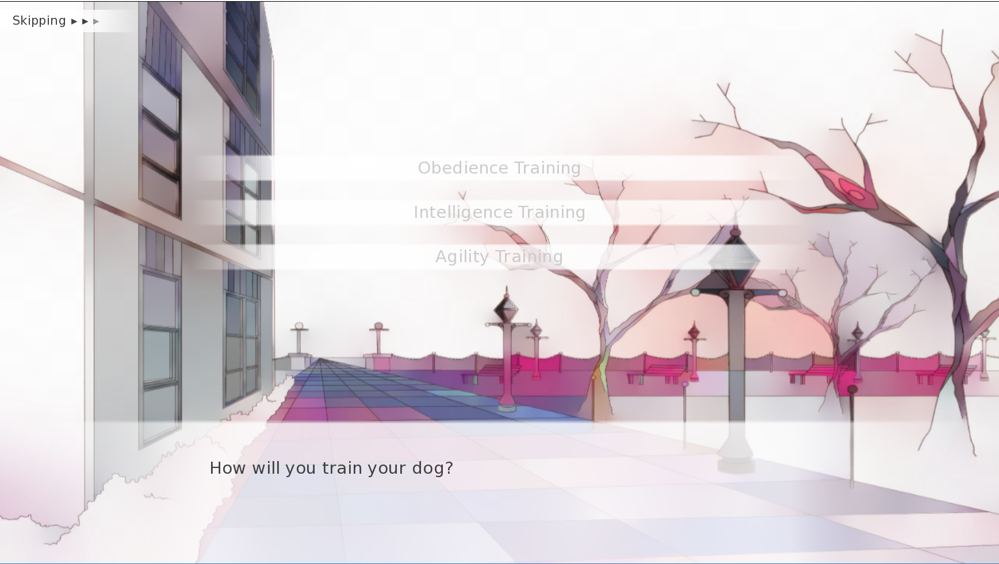
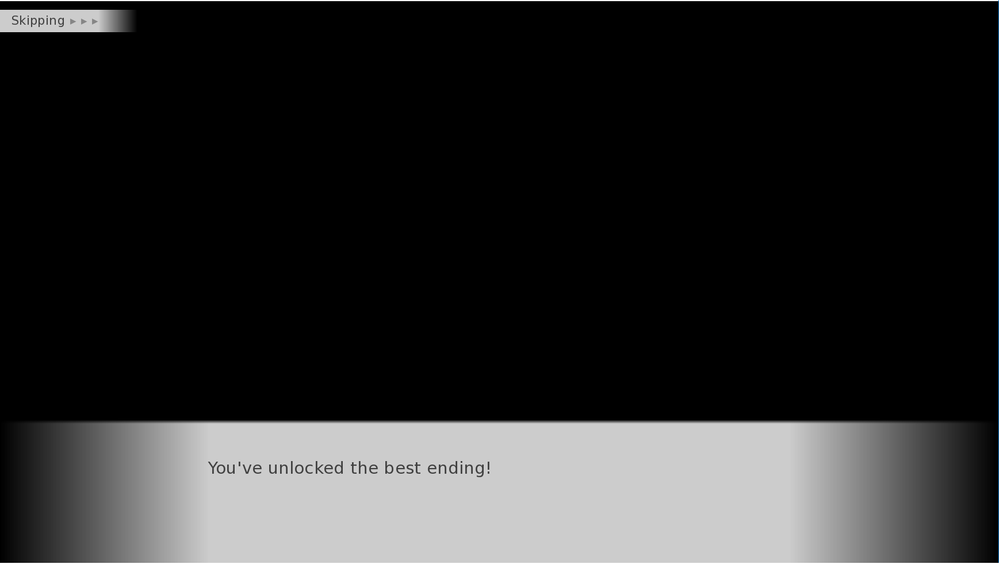
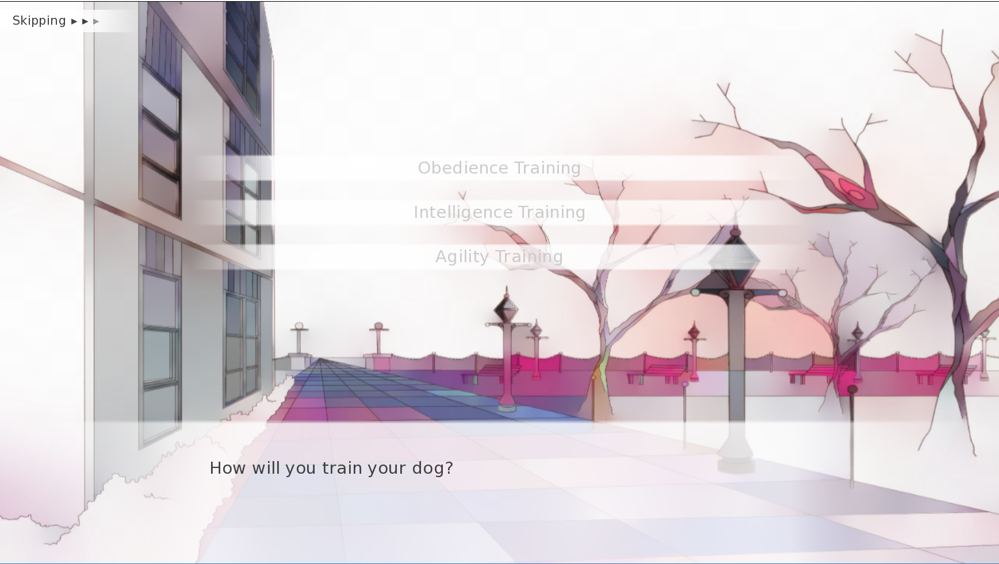
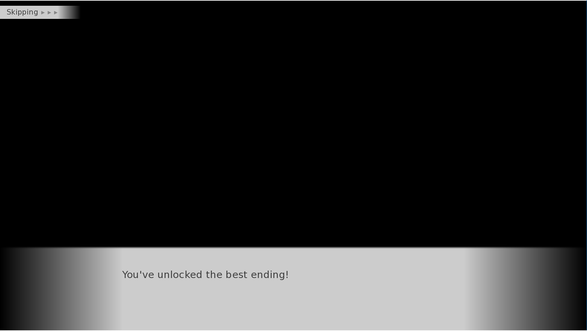

About
Hello World!
Brianna Florio is a Computer Science Student who works with their peers and educators to build a stronger sense of community. Brianna believes that technology is an indispensable tool for creating deeper connections with those around, as well as a resource for unlimited knowledge. Before being introduced to computer science, Brianna already had a resolve to creating better bonds within her community, whether that was at school, or in her hometown. Brianna has previously worked at Teachers Learning Lab, a place for professors want more of a connection with their students and interactive learning in their classroom, furthering her resolve to building connections and inspiring better learning. Brianna has also worked with particle physicists to create software to help conduct a faster and more organized way to read and present data by image and data processing. Brianna has previously been part of the eboard for the Stony Brook Computing Society, continuing to build communities by creating social, professional and educational events to over hundreds of students. Brianna is now currently pursuing her degree in Computer Science and a minor in Digital Arts at Stony Brook University.
 


